Offices and classrooms are often exposed to low-frequency noise below 250 Hz, a range where conventional acoustic panels perform poorly without adding significant thickness and weight. For my graduation project I designed and tested a 3D-printed acoustic metamaterial panel that absorbs this noise through geometry instead of mass, using a labyrinthine channel structure printed as a single material (PLA).
The final double-layer design reached absorption coefficients up to 0.72 at 200 Hz, and integrated behind a conventional acoustic panel it reaches a system depth of 67 mm, compared to 80 mm for a standard booster system with the same performance target. The result is a proof of concept for a compact, recyclable, and demountable low-frequency absorber.
Tools:
Rhino, COMSOL, Ansys Granta EduPack, Bambu Lab Studio, Bambu Lab X1 Carbon (FDM printer), Anycubic Slicer, Anycubic Kobra 2 Max (FDM printer), Brüel & Kjær 4206 impedance tube.
TU Delft Repository:
https://repository.tudelft.nl/record/uuid:005b490e-bb53-4154-b0a1-ce82b3a90b59
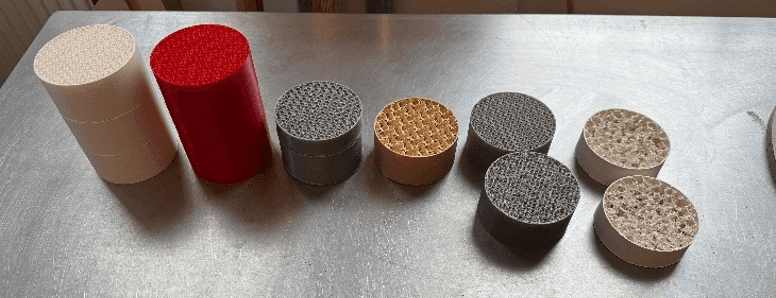
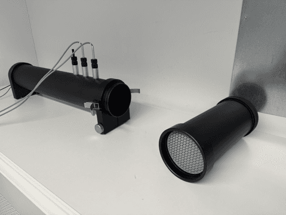
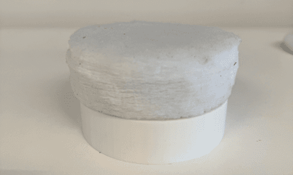
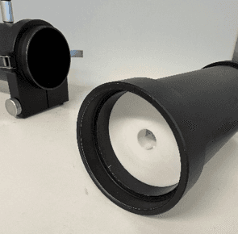
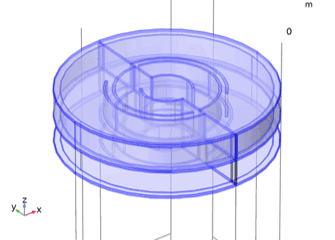
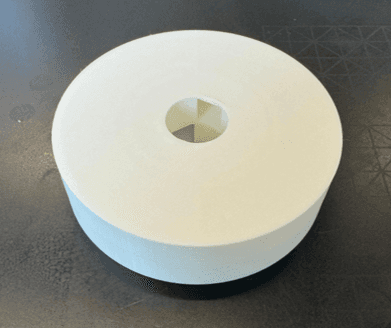
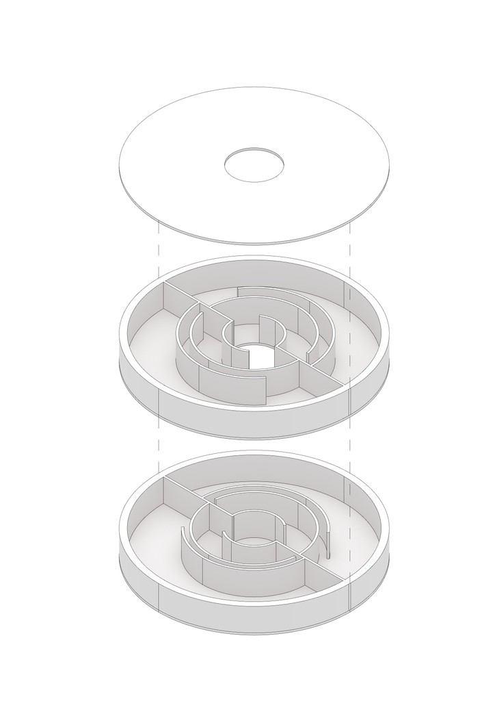
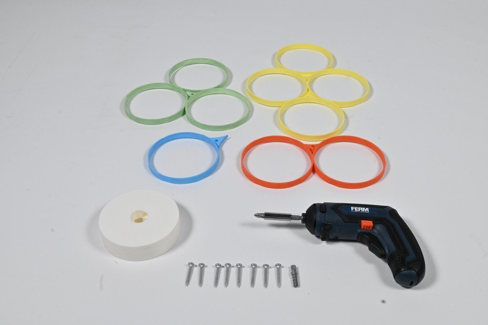
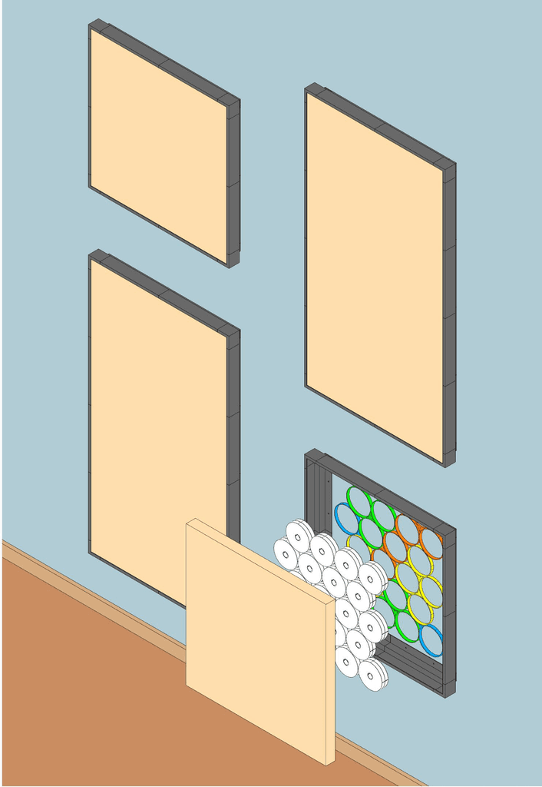
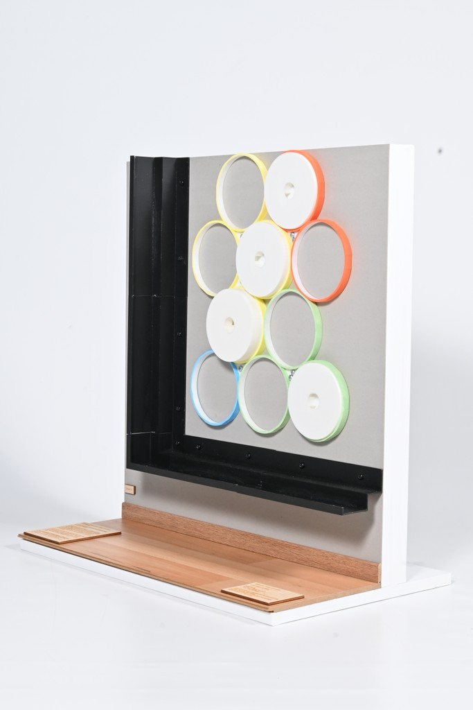
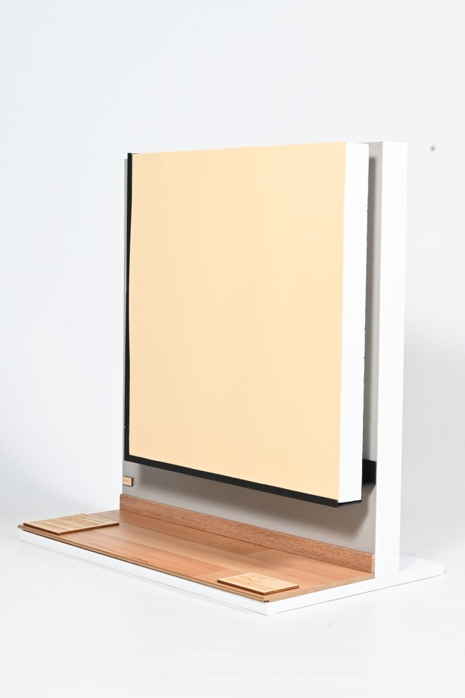
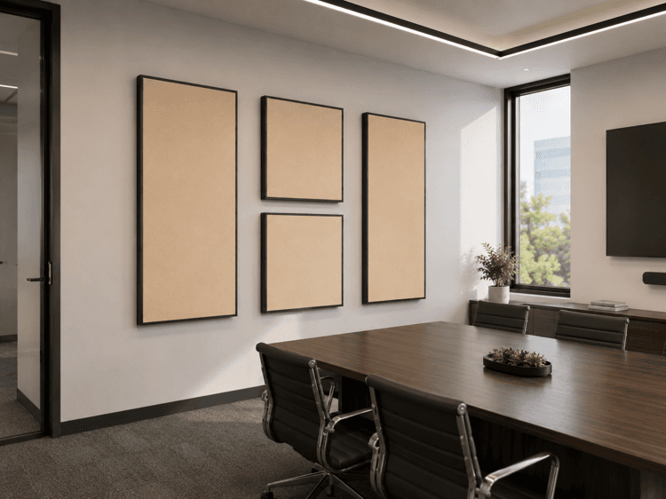
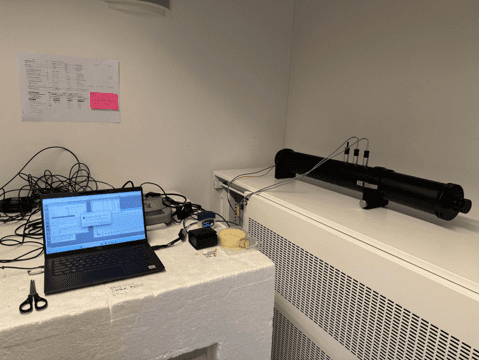
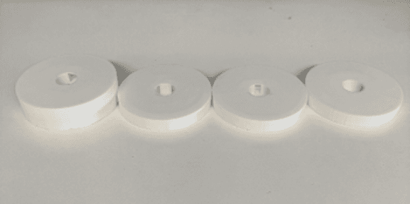
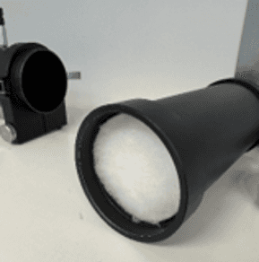
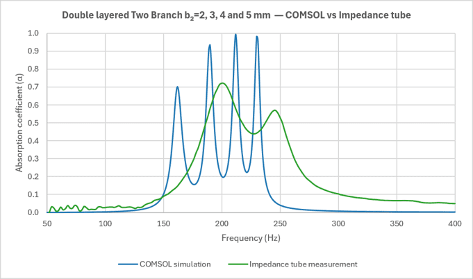
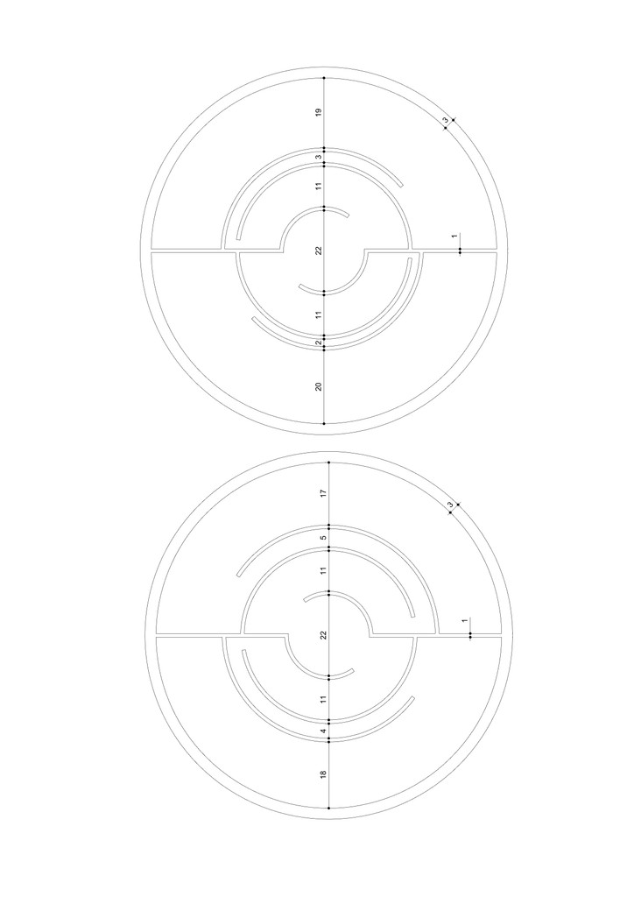
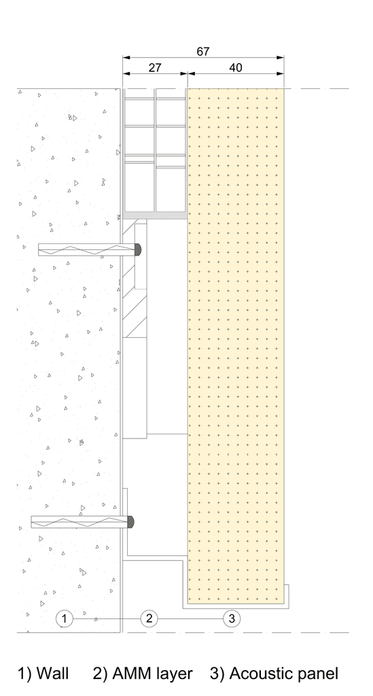
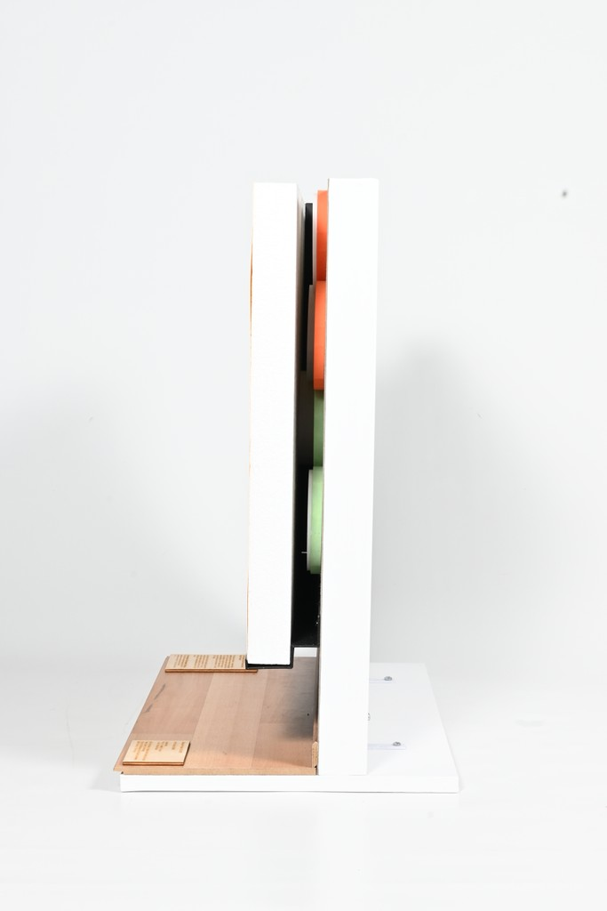
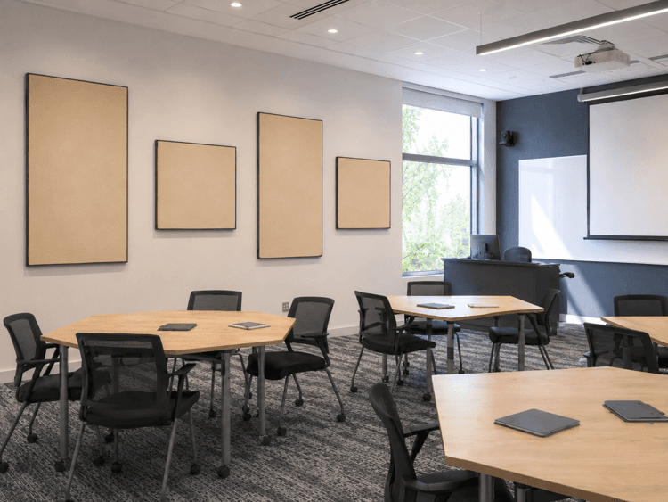